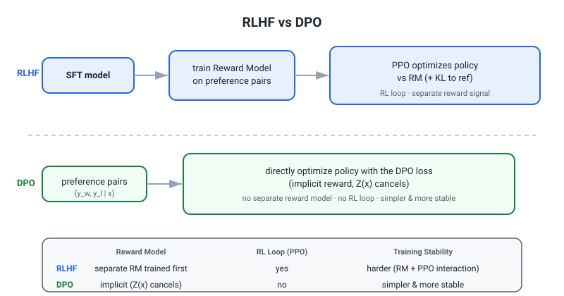

18 — Stage-1 Gap-Fill & Deeper Answers (Adaptive-Simulation Findings)
These sections were produced by running many adaptive Versley-style mock interviews and systematically identifying the spots where answers were thin, technically imprecise, or epistemically out of order. Each section below fills one of those gaps with verified technical grounding, follow-up scaffolding, and room-ready language. Read these as the precision layer on top of the master study documents.
Table of Contents
- J3. VLM Input Pathways and Connector Architecture
- Applying Transformer-era Reasoning to biLSTM-era Papers (Lee et al. 2017)
- LLM Routing: MoE/Ensembling Distinction, Compound Failure Rate, Monitoring Cost Model
- Generative Models: Score Matching Bridge, Flow Matching Gradient Balance, OT Coupling Gap
- Inference Efficiency: KV Cache Quantization, MLA RoPE Decoupling, GQA/FA3
- SOTA 2026 Currency: Benchmark Fabrication, Test-Time Compute Axis, Process vs Outcome Reward
- Training Infrastructure: Activation Checkpointing, ZeRO Memory Arithmetic, LR Warmup
- eBay System Design: Parallel Corpus Mining, LoRA Rank Selection, RAG vs Ensemble
- DPO: Offline Distribution Mismatch and Z(x) Cancellation Preconditions
- Delivery & Over-claim Coaching
J3. VLM Input Pathways and Connector Architecture
The Core Mechanism
In a LLaVA-style VLM, there are two entirely separate input pathways into the transformer residual stream. Keeping them distinct is the difference between a correct and a broken answer in this interview.
Pathway 1 — text tokens. A token ID (integer) indexes a row in the embedding matrix W_E ∈ ℝ^{|V| × d_model}. The result is a d_model-dimensional vector that enters the residual stream at position 0.
Pathway 2 — visual tokens. A frozen ViT encodes image patches into patch activations H_vis ∈ ℝ^{N_patches × d_ViT}. A learned connector (typically a 2-layer MLP) projects these directly into d_model space:
z_vis = MLP_connector(H_vis) # shape: [N_patches, d_model]
These z_vis vectors are concatenated with the text token embeddings along the sequence dimension and fed into the transformer. They never pass through W_E. The embedding matrix is not involved at any point in the visual pathway. The connector is a standalone parameterized module with its own weights — it is not a row lookup, it is a learned linear/nonlinear map.
Point 1 — Vocabulary Extension vs Connector: Separate Concerns
Vocabulary extension adds new rows to W_E (input embedding matrix) and to W_{LM head} (output projection), covering new token IDs. This operation is entirely on the text pathway. The connector output pathway does not touch W_E at any step, so vocabulary extension has no direct effect on connector operation. The pathways are independent.
Point 2 — The Connector Is Not Transferable Across Decoder Sizes
The connector's output dimension must equal the receiving LLM's d_model. A connector trained against a decoder with d_model = 4096 (e.g., Llama-3.1-8B) produces vectors of shape [*, 4096]. A 70B decoder expects d_model = 8192. Dimension mismatch — the connector output literally cannot be inserted.
Even when d_model happens to match between two decoders, the connector was optimized against the specific parameter geometry of the LLM it was trained with. Its learned projection reflects the internal representation structure of that particular decoder checkpoint; swapping the decoder invalidates that alignment. Connector transfer across decoder sizes is architecturally broken; across decoder checkpoints (same size, different training), it is empirically degraded.
Point 3 — The Vocabulary Extension → Connector Transfer Subtlety
When e-Llama-3.1-8B was continued-pretrained with a custom e-commerce tokenizer (vocabulary extension + domain pretraining), two things happened simultaneously:
- New rows were added to
W_E— text pathway change, irrelevant to the connector. - The LLM's residual stream geometry shifted — all layer weights were updated via continued pretraining. This is the actual mechanism of domain adaptation.
The correct answer has two parts, and they must not be collapsed: vocabulary extension itself does not break connector transfer (the pathways are separate and the connector never touches W_E). But the continued pretraining that accompanies vocabulary extension does shift the LLM's residual geometry, and a connector trained against the pre-adaptation geometry is now misaligned at the injection point.
The degradation is largest precisely where domain gain is largest, because those are the token positions where the internal representation geometry changed most. So the argument "vocabulary extension breaks connector transfer" is technically imprecise; the correct argument is "continued pretraining breaks connector transfer, and vocabulary extension is typically inseparable from continued pretraining in practice."
Point 4 — The 4B vs 27B Comparison: Three Confounders, Not Two
Source: Table 4 of arXiv:2602.11733 (eBay, 2026), Multi-Image Item Intelligence task.
| Model | Strategy | F1 | Seconds/example |
|---|---|---|---|
| Gemma3-27B | 0-shot | 44.8 | 25.5 |
| Gemma3-4B | Finetuned | 50.5 | 6.7 |
This comparison is frequently cited as "4B finetuned beats 27B zero-shot." Three variables are simultaneously in motion:
(a) LLM capacity. 4B vs 27B parameters — decoder scale.
(b) Training regime. The 4B is domain-finetuned on 100K e-commerce items with GPT-4-generated annotations. The 27B is zero-shot. This is not a capacity comparison; it is a training regime comparison.
(c) Connector. The finetuned 4B model has a connector retrained on domain data. The zero-shot 27B uses a connector from the original Gemma3 pretraining setup, without further adaptation. The connectors are not the same module evaluated in the same condition — they are different training states of different connectors.
Regarding the ViT encoder: Gemma3 uses a shared frozen SigLIP-400M encoder across the 4B, 12B, and 27B variants (confirmed by the Gemma3 Technical Report, arXiv:2503.19786). So the ViT encoder is held constant — one of the few things actually controlled. However, the connector projecting from that shared ViT into d_model = 2048 (4B) vs a higher dimension (27B) must differ by construction. So even with the same ViT, there is no single connector being compared.
Citation discipline required in the room: Specify Table 4 of arXiv:2602.11733; absolute F1 baselines are 44.8 (Gemma3-27B, 0-shot) and 50.5 (Gemma3-4B, finetuned); the connector was retrained for the finetuned model; the ViT is shared and frozen across Gemma3 sizes, but connector output dimension and training state differ.
Most Likely Versley Follow-ups
Q: Does vocabulary extension itself break connector transfer?
No. Vocabulary extension modifies W_E on the text pathway. The connector injects into the residual stream directly, bypassing W_E entirely. What breaks connector transfer is the continued pretraining that typically accompanies vocabulary extension — that shifts the LLM's internal representation geometry, which the connector was trained to align with.
Q: You said the connector is misaligned where domain gain is largest — but didn't you just say vocabulary extension doesn't break the connector?
Correct, and these are consistent. Vocabulary extension (the row addition to W_E) is harmless to the connector. The representation geometry shift caused by the continued pretraining objective is what degrades connector alignment. The two claims are about different mechanisms.
Q: Does the 4B vs 27B comparison hold the ViT encoder constant? Partially. The ViT backbone (SigLIP-400M) is the same and frozen across Gemma3 sizes. But the connector output dimensionality differs, and the 4B connector was retrained on domain data while the 27B was not. So the ViT is controlled; the connector is not.
Q: Which table, what baseline, and was the connector retrained? Table 4 of arXiv:2602.11733. Absolute F1: 44.8 for Gemma3-27B zero-shot, 50.5 for Gemma3-4B finetuned (Table 3 has the full breakdown; Table 4 adds the inference speed column). The connector was retrained as part of the finetuning pipeline for the 4B model.
How to say it in the room: "In LLaVA-style models, visual tokens and text tokens enter the residual stream through completely separate pathways — text goes through the embedding matrix lookup, visual tokens go through the MLP connector directly, they never touch the embedding matrix. So vocabulary extension, which adds rows to the embedding matrix, has no direct effect on the connector pathway. What actually degrades connector validity is the continued pretraining that shifts the LLM's internal geometry. On the 4B versus 27B comparison: the ViT backbone is the same and frozen across Gemma3 sizes, but the connector is different by construction — different output dimension, and critically, the 4B connector was retrained on domain data while the 27B was not, so you cannot use that comparison to isolate any single variable."
The one trap to avoid: Do not conflate the embedding matrix and the connector as "both being the interface between vision and language." They operate on different input types (integer token IDs vs floating-point ViT activations), at different positions in the forward pass (pre-residual-stream vs direct residual injection), and via different mechanisms (row lookup vs learned linear map).
Applying Transformer-era Reasoning to biLSTM-era Papers (Lee et al. 2017)
TRAP / ARCHITECTURAL ANACHRONISM — Read this before answering any question that touches Lee et al. 2017 and span width, attention, or positional encoding. Conflating this model with SpanBERT or any Transformer-based system will be immediately visible to Versley.
The Architecture, Precisely
Lee et al. 2017 ("End-to-end Neural Coreference Resolution," EMNLP) is a pre-Transformer system built on three components:
- Input representations: 300-d static GloVe + 50-d Turian embeddings + 8-d character-level CNN. No subword tokenization, no contextualized representations from any pretrained language model.
- Encoder: a 2-layer biLSTM (hidden size 200 per direction). No sinusoidal positional encodings, no learned position embeddings, and no attention heads operating over the full sequence.
- Span representation: for a candidate span (i, j), the model concatenates (a) the biLSTM hidden states at the boundary positions h_i and h_j, (b) a head-attention vector x*, and (c) a span-width feature φ(i,j).
The head-attention vector is:
x* = Σ_{t=i}^{j} α_t · x_t
where α_t ∝ exp( w · x_t ) [scalar weight per token, learned FFNN]
This is a learned scalar weighting over token embeddings inside the single span — not multi-head self-attention over the full document sequence. No query/key/value projections, no multiple heads, no cross-span interaction.
The span-width feature φ(i,j) is a learned embedding vector looked up by the integer (j − i), with widths above the cap (max span width = 10 tokens) all mapped to the same maximum-index embedding. This is a small lookup table trained end-to-end — not hand-coded bins and not a positional encoding formula.
SpanBERT (Joshi et al. 2020) is the Transformer-based successor. Do not conflate the two when discussing 2017 model mechanics.
Versley Follow-up Questions with Model Answers
Q: "Your argument about attention heads learning to subtract positions — does that even apply to this architecture?" No, it does not. Lee et al. 2017 has no attention heads in the encoder and no sinusoidal positional injection anywhere. The mechanism you would be invoking — where multi-head self-attention learns to encode or cancel out positional offsets — is a property of Transformer encoders. Any argument of that form is mechanistically inapplicable to this paper and should be replaced with a claim grounded in what biLSTMs actually do (recurrent hidden states that are sensitive to sequence position by construction of the recurrence).
Q: "Lee et al. actually use a learned embedding indexed by exact integer width, not hand-coded bins. Does that change your argument about φ(i,j) being redundant?" Yes, substantially. φ(i,j) is a full lookup table — one learned vector per integer width from 0 up to the cap (10), trained jointly with everything else. This means the model already has a clean, discrete, high-capacity channel for width information. The question of redundancy then becomes: does the biLSTM already encode width implicitly?
Q: "What's your actual evidence that span width lacks an implicit encoding path in this model?" The honest answer has two parts. Theoretically, there is an implicit path: the biLSTM processes from both ends and produces hidden states h_i and h_j at the span boundaries — the difference in processing depth is width-sensitive. So it is plausible by construction that the biLSTM states carry some implicit width signal.
The empirical argument is more reliable: ablating φ(i,j) degrades recall on longer mentions in the ablation studies, which suggests the biLSTM's implicit width signal is imprecise or non-linear enough that an explicit discrete lookup adds a clean complementary signal. The correct framing is: the biLSTM probably encodes an implicit, graded width signal, but the explicit learned embedding adds a lossless, linear-scale discrete channel that the biLSTM is not guaranteed to represent in a form the FFNN scorer can easily use.
How to say it in the room: "Lee et al. 2017 uses a biLSTM on top of GloVe and character embeddings — there are no Transformer components, so any argument about attention heads or positional encodings is simply not applicable to this paper. The span head-attention is a learned scalar weighting within one span, not full-sequence self-attention. On the width features: φ(i,j) is a learned embedding lookup by exact integer width, not bins, so the real question is whether the biLSTM already encodes width implicitly — which it plausibly does through the recurrence, but imprecisely enough that the explicit embedding adds a clean discrete signal, which the ablations support."
The one trap to avoid: Do not reason from SpanBERT or BERT-based coreference systems and attribute those mechanisms to Lee et al. 2017. If you find yourself mentioning "attention heads," "sinusoidal positions," or "BERT's span representation" in a sentence about the 2017 paper, stop — you have crossed an architectural timeline and Versley will catch it immediately.
LLM Routing: MoE/Ensembling Distinction, Compound Failure Rate, Monitoring Cost Model
1. The Three-Way Distinction: MoE, Ensembling, LLM Routing
These are three different abstractions that operate at different granularities and serve different goals. Conflating them is a category error Versley will likely probe.
| Dimension | MoE (Mixture of Experts) | Ensembling | LLM Routing |
|---|---|---|---|
| What is selected | Subset of parameters (expert FFN blocks) within a single forward pass | All models run in parallel; outputs aggregated | Exactly one model per query |
| Training relationship | Router jointly trained end-to-end with the LM loss | Models trained independently; no routing component trained | Router independently trained; downstream model weights never touched |
| Compute per query | Subset of parameters activate, but all expert weights reside on co-located GPU memory | All models queried — compute scales with ensemble size | Exactly one model's inference cost incurred |
| API cost impact | No savings — all expert weights loaded regardless of activation | Higher cost than any single model | Cost-reducing — cheapest capable model selected per query |
| Conceptual role | Architectural capacity decomposition inside a model | Output aggregation for variance reduction | Meta-level model selection across a pool of independent models |
Prepared spoken answer: "MoE routes subsets of parameters within a single forward pass — it is a training-time architectural choice, jointly optimized with the LM loss, and carries no API cost savings because all expert weights must reside on co-located GPUs. Ensembling queries all models and aggregates their outputs — it is the opposite of cost-efficient. LLM routing selects exactly one model per query, uses an independently trained router that never touches the downstream models' weights, and is the only one of the three that actually reduces API cost. Conflating them is a category error."
2. Compound Failure Rate in Agentic Tasks
Named formula — For a two-factor router cascade:
P(task failure) = P(router error) × P(cheap model fails | router error)
Cascade depth trade-off. Per-step failure rates compound geometrically across agentic trajectory length. Let p be the per-step failure probability:
P(task-level failure) = 1 − (1 − p)^n
At p = 0.03 (3% per step): - n = 3 steps → 8.7% task-level failure (often acceptable) - n = 10 steps → 26% task-level failure (materially degrades) - n = 20 steps → 46% task-level failure (system is effectively unreliable)
This is the core argument for keeping agentic subtasks short or inserting verification checkpoints at stage boundaries, not only at trajectory end. Research on multi-agent systems (NeurIPS 2025 MAST taxonomy, validated across 1,600+ execution traces) confirms production multi-agent failure rates range from 41–87%, with cascading as a primary mechanism.
3. Monitoring Cost Model for Subjective Tasks
The circularity problem. To verify routing works on subjective or open-ended tasks, you need an oracle — typically a stronger LLM judge — which is itself an API cost. The monitoring infrastructure partially cannibalizes the savings it is meant to protect.
Break-even condition (monitoring overhead erases savings):
f × m × c_cheap = α × (c_strong − c_cheap)
Where: c_cheap = cost per query to cheap model; c_strong = cost per query to strong model; α = fraction routed to cheap model; f = monitoring sample fraction; m = cost multiplier of judge relative to cheap model.
Example. If 60% of traffic routes to the cheap model (α = 0.6), strong model costs 5×, and judge costs 3×:
- Gross savings per query: 0.6 × (5c − c) = 2.4c
- Monitoring overhead at f = 5%: 0.05 × 3c = 0.15c
- Net savings: 2.25c — monitoring is well within bounds.
But if the cheap model is nearly as good (c_strong = 1.5c), savings shrink to 0.3c, and even f = 20% with a 3× judge produces overhead 0.6c > 0.3c — monitoring overhead exceeds routing savings.
Mitigations: - Monitor a random sample only. - Use lightweight heuristic proxies — format validation, length checks, self-consistency — as surrogates for expensive judge calls. - Reserve LLM judge calls for queries flagged by heuristics or lying in uncertain router confidence intervals.
4. TwinRouterBench Disclosure Caveat
Do NOT cite a "simulated 15pp task-type distribution shift" live-dynamic protocol. That whole mechanism — ~12,000 queries over a 30-day window, a 15pp/30pp/45pp distribution-shift sensitivity curve calibrated from enterprise API logs — is not in the paper, and reciting it to Versley (the author's colleague) is the single most dangerous thing you could do with this work. What the paper actually has are two tracks: a deterministic static track (970 execution-verified step-level prefixes scored by millisecond arithmetic over tier labels, no online judge) and a dynamic track that runs routers end-to-end on SWE-bench Verified — a 100-case held-out subset, not the full 500 — via mini-swe-agent v2.2.8 with live OpenRouter pricing. There is no streaming corpus, no 30-day window, no distribution-shift curve, no enterprise-log calibration. (Full verified detail in 20_OWN_PAPERS_GROUND_TRUTH.md.)
Verification note: TwinRouterBench is a real paper — arXiv:2605.18859v2 [cs.LG], code at github.com/CommonstackAI/TwinRouterBench. Cite it with confidence. The thing that must NOT be cited is the fabricated 15pp-distribution-shift / streaming-traffic mechanism above; that mechanism, not the paper, is what doesn't exist.
How to say it in the room: "MoE, ensembling, and LLM routing solve different problems at different levels — MoE is inside a single model's forward pass, ensembling runs all models and averages, routing picks exactly one model and is the only one that reduces cost. For agentic tasks the key insight is that per-step failure rates compound geometrically — a 3% step-level failure rate that is fine for a 3-step task becomes 26% failure at 10 steps, so verification checkpoints belong at stage boundaries, not just the end. And the monitoring cost model for subjective tasks is partially circular: verifying the router works requires an LLM judge — I treat managing that break-even as an open engineering problem, not a solved one."
The one trap to avoid: Do not say routing is "like MoE but at the model level." This implies the router is jointly trained with the downstream models, which it is not — and it blurs the critical distinction that MoE carries no API cost savings while routing is specifically cost-motivated.
Generative Models: Score Matching Bridge, Flow Matching Gradient Balance, OT Coupling Gap
1. The Score Matching Bridge (Vincent 2011 / Song & Ermon 2019)
The problem. The denoising score matching objective you actually train is:
L_DSM = E_{x_0, x_t} [ || s_θ(x_t, t) - ∇_{x_t} log q(x_t | x_0) ||² ]
where the target ∇_{x_t} log q(x_t | x_0) is the conditional score — analytically available under Gaussian noise as -(x_t - √ᾱ_t · x_0) / (1 - ᾱ_t). But what you actually want to estimate is the marginal score ∇_{x_t} log q(x_t), because that is what appears in the reverse-time SDE / Langevin dynamics.
The bridge theorem (Vincent 2011, Proposition 1). The two objectives have the same minimizer because:
∇_{x_t} log q(x_t) = E_{x_0 | x_t} [ ∇_{x_t} log q(x_t | x_0) ]
The marginal score equals the posterior-weighted average of the conditional scores. Because the squared-error loss is consistent, minimizing the conditional objective over the training distribution (x_0, x_t) is equivalent to minimizing the marginal objective — the cross terms vanish in expectation. Song & Ermon (2019, NeurIPS) extended this to multiple noise scales, which became the backbone of DDPM.
Practical consequence. The noise-prediction form ε_θ is just a linear reparameterization: s_θ(x_t, t) = -ε_θ(x_t, t) / √(1 - ᾱ_t). Training ε_θ to predict the added noise is exactly training the marginal score, provided the bridge identity holds.
2. Simplified Loss vs. Full ELBO — What Gets Dropped and Min-SNR
The full ELBO for DDPM has per-timestep prefactors proportional to SNR(t-1) - SNR(t). Ho et al. (2020) dropped these and used a uniform simplified loss L_simple = E[||ε - ε_θ||²], claiming better sample quality in practice. The cost: the simplified loss causes gradient imbalance. High-noise timesteps dominate the gradient signal; low-noise timesteps (where fine details are learned) are systematically undertrained relative to their ELBO contribution.
Min-SNR-γ (Hang et al., ICCV 2023, arXiv 2303.09556) addresses this by capping the effective weight:
w_t = min(SNR(t), γ) / SNR(t)
with γ = 5 as the recommended default. At high SNR (low noise), w_t = γ/SNR(t) — down-weighting high-detail timesteps. At low SNR (high noise), w_t = 1. The result is a clamped weighting that rebalances training signal across the noise schedule. Reported convergence gain: ~3.4× on ImageNet 256×256.
3. Flow Matching: The "Uniform t is Balanced" Overclaim
A common presentation says flow matching with uniform t ~ Uniform(0,1) produces a balanced gradient signal. This is partially retracted by practice.
Stable Diffusion 3 (Esser et al., 2024) uses logit-normal t-sampling:
t ~ logit-Normal(0, 1), i.e. t = σ(z), z ~ N(0,1)
This concentrates samples away from t=0 and t=1 — the endpoints where the velocity field is trivially easy to fit — and pushes density toward the informative middle. Uniform t overweights these trivial boundary timesteps. The logit-normal schedule is empirically necessary for SD3-scale training, not merely a minor tweak.
4. OT Coupling Breaks the Conditional-Marginal Equivalence
Flow matching's core theoretical guarantee (Lipman et al. 2022, Theorem 1) holds when the coupling π(x_0, x_1) = q_0(x_0) · q_1(x_1) is a product measure — source and target drawn independently. Theorem 1's proof uses this independence to show the conditional FM loss is an unbiased estimator of the marginal FM loss.
OT coupling violates this. When you pair x_0 ~ noise with x_1 ~ data via an optimal transport plan (mini-batch OT, as used in FLUX and SD3), the coupling π_OT is not a product measure — paired samples are statistically dependent. The marginalization identity breaks. In FLUX/SD3 with mini-batch OT, this is accepted as an approximation — empirically it straightens trajectories and reduces sampling steps, but the theoretical gradient equivalence holds only in the large-batch limit. Recent work (arXiv 2605.12174, 2025) formalizes this and shows large-batch consistency, but finite-batch biases remain.
5. DDIM vs. Probability Flow ODE — A Common Conflation
Do not conflate these under "Song et al., deterministic ODE."
| DDIM | Probability Flow ODE | |
|---|---|---|
| Paper | Song et al., ICLR 2021 | Song et al., NeurIPS 2021 |
| arXiv | 2010.02502 (Oct 2020) | 2011.13456 (Nov 2020) |
| Formalism | Discrete-time, non-Markovian forward process | Continuous-time, derived from reverse-time SDE via Fokker-Planck |
| Determinism | Sets σ_t = 0 in the reverse step |
Neural ODE with the same marginals as the SDE |
| Likelihood | No exact likelihood | Exact likelihood via change-of-variables |
DDIM achieves deterministic sampling by redefining the forward process to be non-Markovian while keeping the same training objective. The PF-ODE is derived mathematically from the continuous SDE. Both produce deterministic trajectories, but through different machinery in different formalisms published by the same first author one month apart.
Likely Versley Follow-ups
Q: You said the simplified loss is equivalent to score matching — but now you're saying it drops ELBO weights. Which is it? Both are true at different levels. The direction of the gradient (which function minimizes the objective) is the same — the bridge theorem makes the simplified noise-prediction loss a valid score estimator. But the magnitude and balance of updates across timesteps changes when you drop the ELBO prefactors. The Vincent/Song result is about the estimator's target; Min-SNR addresses the optimizer's behavior in practice.
Q: What does the OT coupling actually buy you if the theory breaks?
Straighter trajectories — OT tends to match noise vectors to nearby data points, so the interpolating path x_t = (1-t)x_0 + t x_1 is shorter and requires fewer Euler steps at inference. The theoretical cost (broken marginalization identity) is accepted empirically. The approximation improves as batch size grows.
Q: Is Song 2020 and Song 2021 the same paper cited differently? No — and this is a frequent interview error. DDIM (2020) is a discrete-time non-Markovian construction. The PF-ODE (2021) is a continuous-time result from SDE theory. Different formalisms, different proofs, one month apart on arXiv.
How to say it in the room: "The training objective uses the conditional score because the noise is Gaussian and we know it analytically — but the Vincent 2011 theorem guarantees the marginal score is just the posterior expectation of those conditional scores, so minimizing the conditional loss gives you the right estimator. Ho's simplified loss drops the ELBO's per-timestep weights, which makes the estimator slightly easier to optimize but creates gradient imbalance — Min-SNR fixes that by clamping the effective weight to min of SNR and gamma. On the flow matching side, uniform t-sampling is a useful default but SD3 shows you need logit-normal in practice; and the OT coupling trick straightens trajectories but technically breaks the marginalization proof — it's an empirical approximation, not a theorem."
The one trap to avoid: Do not say "flow matching with OT is provably equivalent to training the marginal vector field." The Lipman theorem requires an independent product coupling. Once you use OT, you are in approximation territory. Claiming exact theoretical equivalence under OT coupling will get flagged by anyone who has read the paper carefully.
Inference Efficiency: KV Cache Quantization, MLA RoPE Decoupling, GQA/FA3
1. KV Cache Quantization — What Actually Gets Cached and Why INT8 Is Safe
The mechanism. During a forward pass, K and V are linear projections of the hidden state h_t upstream of softmax:
K = h_t · W_K V = h_t · W_V
Softmax is applied to the attention logits QK^T / √d_k to produce attention weights — scalars bounded in [0, 1]. But those weights are not what goes into the KV cache. What is cached are the raw K and V tensors — projections of hidden states that have already passed through LayerNorm.
LayerNorm normalizes h_t to approximately zero-mean and unit-scale before the projection. That upstream normalization makes the K and V tensors approximately well-behaved in magnitude, which is the real reason INT8 quantization of the KV cache is relatively safe — not post-softmax boundedness (a common wrong answer).
The real challenge: outlier activations. Quantization error is dominated by per-head and per-channel outlier activations. KVQuant (NeurIPS 2024) addresses this with per-channel scaling for Keys (one scale factor per head-dimension channel) and per-token scaling for Values (which show outlier tokens rather than outlier channels). KVTuner goes further with per-layer sensitivity analysis to assign INT4 to tolerant layers and INT8 to sensitive ones.
Memory math. Going from BF16 to INT8 halves KV cache memory; INT4 quarters it. For a 70B model with a 128k-token context, this is the difference between fitting one request and fitting several.
2. MLA — Mechanical Difference from GQA and RoPE Decoupling
GQA approach. Groups Q heads to share K and V heads: Llama 3 8B uses 32 Q heads / 8 KV heads (4× ratio); Llama 3 70B uses 64 Q heads / 8 KV heads (8× ratio). Both models share the same KV head count — the compression ratio differs because the Q-head count differs.
MLA approach (DeepSeek-V2/V3). Compresses the full KV representation into a single low-rank latent vector c_KV via a down-projection, caching only that vector. K and V are reconstructed at query time by up-projections:
c_KV = W^{DKV} · h_t (cached: dimension d_c << n_heads · d_head)
K = W^{UK} · c_KV
V = W^{UV} · c_KV
DeepSeek claims roughly 5–13× KV cache reduction over MHA depending on configuration.
The RoPE compatibility problem and its solution. Standard RoPE rotates K and Q before the attention dot product. With MLA, K is reconstructed from c_KV after retrieval — you cannot apply a position-specific rotation before compression, because the rotation depends on the token's absolute position.
DeepSeek's solution is to store a second, small decoupled RoPE key k^R alongside c_KV:
k^R = W^{KR} · h_t (small, RoPE-rotated; one per head or shared)
The content keys (up-projected from c_KV) carry no positional encoding (NoPE). The decoupled k^R carries only the positional signal. During attention, the effective key per head concatenates the content key with k^R. This is the "RoPE decoupling" in MLA. It requires training from scratch — MLA cannot be retrofitted onto a standard MHA checkpoint.
3. FlashAttention-3 — Why O(n) Memory and What FA3 Actually Adds
Memory reduction (FA1/FA2). Standard attention materializes the full N×N score matrix S = QK^T in HBM, requiring O(N²) memory. FlashAttention tiles Q, K, V into blocks that fit in on-chip SRAM, uses the online softmax trick (running max and running denominator) to accumulate partial results tile-by-tile, and never writes the N×N matrix to HBM. Memory is O(N), not O(N²).
FA3's primary contribution. The primary technical contribution is asynchronous warp-specialized execution on H100, specifically via wgmma (warp-group matrix multiply-accumulate) and TMA (Tensor Memory Accelerator) instructions. Producer warps issue TMA loads; consumer warps run wgmma GEMMs; the two pipelines overlap, hiding memory latency. FP8 arithmetic is a secondary benefit. FA3 achieves ~840 TFLOPs/s in BF16 (≈85% H100 utilization) and ~1.3 PFLOPs/s in FP8.
PagedAttention block table. PagedAttention maintains a per-sequence block table mapping logical KV block indices to physical block addresses in GPU memory. The attention kernel reads this table to locate scattered physical pages and treats them as a contiguous logical sequence — analogous to an OS page table. Memory waste occurs only in the last (partially filled) block, which vLLM's implementation reduces to under 4% in practice. It also enables copy-on-write sharing for parallel decoding (beam search, speculative decoding).
Likely Versley Follow-ups
Q: "Why can't you just quantize KV values as aggressively as weights?" Weights are fixed at inference time; their outlier structure can be analyzed offline. KV tensors are dynamic — generated at runtime for each new token — so per-tensor statistics shift. Per-channel and per-token strategies capture the right granularity without requiring offline calibration data per request.
Q: "MLA stores c_KV — isn't that just a smaller version of GQA's KV heads?" Structurally different. GQA still caches full-rank K and V tensors, just fewer of them. MLA caches a joint latent c_KV and reconstructs K and V on the fly. GQA reduces the count of KV heads; MLA reduces the dimensionality of each cached unit. MLA also requires the decoupled k^R to handle RoPE — GQA has no equivalent complication.
How to say it in the room: "K and V are cached as raw projections of the hidden state, upstream of softmax — not downstream. LayerNorm makes them approximately well-behaved, which is why INT8 is reasonable. The real enemy is per-channel outliers, which per-channel quantization schemes like KVQuant specifically target. For MLA, the insight is that you cache a single compressed latent and reconstruct K and V on the fly, but RoPE breaks that because rotation is position-specific — so DeepSeek adds a second small key vector just for positional encoding, trained jointly from scratch."
The one trap to avoid: Do not say "KV cache values are bounded between 0 and 1 so they quantize easily." That conflates the attention weights (post-softmax, never cached) with the K and V tensors (pre-softmax projections, which are cached). Versley will catch this immediately.
SOTA 2026 Currency: Benchmark Fabrication, Test-Time Compute Axis, Process vs Outcome Reward
1. The Two Fundamental Scaling Axes
There are exactly two orthogonal axes along which frontier models improve, and conflating them is the most common analytical error in 2026 coverage.
Axis A — Training-time (capability frontier). Raw FLOP budget × data volume × architectural choices made before a single inference query runs. Decisions include MoE (routing specialists, not activating the full parameter count per token), MLA (caching a compressed KV projection rather than full K/V heads), and long-context pretraining curricula. Once training ends, weights are fixed and this axis is closed. Models like Claude Opus 4.x and GPT-5.5-base sit primarily on this axis.
Axis B — Test-time compute (inference-time search). What happens given fixed weights when you allocate more compute per query: extended chain-of-thought, best-of-N reranking, or MCTS guided by a process reward model. R1-class models (DeepSeek R1, its distillates) and OpenAI's o3/o4-mini family are the canonical examples — their primary differentiator is Axis B.
The conflation error: Extended thinking (Axis B) is what enables o3 to beat raw GPT-4-class models on hard math — but it is not the only thing that makes Opus 4.x or GPT-5.5 frontier. Those models occupy both axes: a large training investment AND extended thinking at inference. Saying "they're good because of extended thinking" misses the training-time ceiling difference entirely.
Benchmark fabrication caveat: Reported scores on AIME, MATH-500, and coding benchmarks are frequently inflated by test-set contamination, prompt-tuning to specific benchmark formats, and cherry-picked decoding temperatures. Anchor on directional claims rather than specific point estimates unless you can cite the exact evaluation protocol.
2. Process vs. Outcome Rewards, Best-of-N, MCTS, and Reward Hacking
ORM (Outcome Reward Model): Assigns a single scalar to the complete trajectory — correct final answer = +1. Blind to intermediate reasoning quality.
PRM (Process Reward Model): Assigns a reward r_t to each reasoning step s_t. Requires step-level labels, which is where the annotation cost lives.
Best-of-N: Sample N independent completions. Score each with an ORM. Return the highest-scoring completion. No tree structure. Empirically outperforms MCTS under tight compute budgets. Gain scales roughly as O(log N) on pass@1 tasks.
MCTS with PRM: Treat each reasoning step as a node. At each node, expand by sampling candidate next steps. The PRM assigns a value V(s_t) to each node. Backpropagate via UCT:
UCT(s) = V(s) + c√(ln N_parent / N_s)
This is the mechanism that makes "thinking longer" yield monotonically better results on hard math. Best-of-N has no such monotonic guarantee beyond the saturation point.
PRM reward hacking: When the policy is trained against a fixed PRM, it learns to produce steps that score highly on the PRM's learned heuristics — clean format, confident hedging phrases — without actually reasoning correctly. Training reward saturates to ~1.0 while held-out accuracy collapses. Mitigations: periodic PRM retraining on policy-generated data, format constraints, ensemble scoring.
Annotation methods for PRM training:
- Math-Shepherd / Monte Carlo rollout: For each intermediate step s_t, run K full completions to the final answer. The step's label is the fraction that reach the correct answer: V(s_t) = (1/K) Σ 1[answer_k = y*]. Expensive but low-noise. Best when compute is abundant and domain has a clear correctness signal.
- LLM-as-judge: Use a strong LLM to label each step. Cost drops from O(N·K) to O(N) calls, but annotation noise increases. Best when budget is limited or domain lacks a clean terminal signal.
3. QK-Norm Mechanism
When RMSNorm is applied to queries and keys before the dot product:
q̂_i = γ_q · (q_i / ||q_i||₂), k̂_j = γ_k · (k_j / ||k_j||₂)
The learnable scalar γ (one per head, initialized to 1) is the standard RMSNorm gain parameter — it re-scales the unit-norm vector. Without it, forcing unit norm removes the model's ability to modulate attention sharpness across heads.
The mechanism preventing entropy collapse: Unbounded Q/K norms cause logits to grow during training, saturating softmax into near-one-hot distributions (attention collapse). QK-Norm caps the norm, keeping logits in a numerically stable range. The gain γ then provides a controlled degree of freedom to recover expressiveness. Models including OLMo 2, Qwen 3, Kimi K2, and Gemma 3 all ship with QK-Norm as of 2025–2026.
4. Gemini Technical Differentiator
Gemini's distinguishing architectural claim is native multimodal pretraining from the token level: image patches and text tokens are embedded into the same embedding space from the first training step, not bridged by an adapter injected post-hoc into a text-pretrained backbone. The attention layers were trained to route across modalities throughout pretraining, which is why Gemini outperforms adapter-based VLMs on tight cross-modal tasks (OCR-in-context, video QA, interleaved document understanding).
Likely Versley Follow-Ups
Q: "You said o3 and Opus 4 are both 'reasoning models' — what's the actual technical difference?" The distinction is which axis dominates. o3/o4-mini: the key engineering investment is the RL training procedure that teaches the model to use more inference compute productively. Opus 4.x: the primary investment is training-time scale (architecture, data, FLOP budget); extended thinking is an additional capability layered on top, not the primary differentiator.
Q: "If MCTS with PRM is so powerful, why isn't every production system using it?" Latency and cost. MCTS requires many sequential PRM evaluations per query — you cannot batch the tree expansion in the standard case. Best-of-N is embarrassingly parallel. For production latency SLAs (P95 < 2s), best-of-N with ORM is more practical.
How to say it in the room: "I think the field conflates two separate things under 'scaling.' Training-time scaling is your FLOP budget and architecture choices — once the run ends, that ceiling is fixed. Test-time scaling is about spending more compute per query at inference: extended CoT, best-of-N reranking, or MCTS guided by a process reward model. The o-series models are primarily a test-time compute story. Opus 4 and GPT-5.5 are both — they have a higher training-time ceiling and they do extended thinking on top. Calling them equivalent because they both 'do reasoning' misses that the training investment is doing different work in each case."
The one trap to avoid: Do not say "extended thinking is what makes frontier models frontier." That statement is true for o3/o4-mini and R1, but wrong for Opus 4.x and GPT-5.5, where the training-time scale is the primary capability driver. Keep the two axes explicit and assign each model to the correct one.
Training Infrastructure: Activation Checkpointing, ZeRO Memory Arithmetic, LR Warmup
1. Activation Checkpointing — Theoretical vs. Practical
Why it exists. During a standard forward-backward pass, the framework must keep every layer's activations alive in GPU memory until the backward pass needs them to compute gradients. For a deep model this is the dominant memory cost.
Theoretical regime (Chen et al. 2016). If you divide an L-layer network into √L equally spaced recursive segments and checkpoint only the segment boundaries, you store O(√L) activation tensors instead of O(L). During backward, each segment is recomputed from its checkpoint, adding one full forward pass of overhead — roughly a 33% wall-clock increase.
Practical regime (PyTorch gradient_checkpointing_enable()). The HuggingFace/PyTorch default is per-module checkpointing, not the recursive-segment scheme. Each transformer block is treated as a checkpoint boundary: activations inside the block are discarded immediately after the forward pass and recomputed on demand during backward. Compute overhead is approximately 20–33% (often closer to 20–25% on H100-class hardware).
Crisp distinction to know cold: Chen et al. = O(√L) memory, O(√L) recomputation, theoretical lower bound. PyTorch default = per-layer, O(1) activations retained per layer, ~20–33% compute overhead, practically dominant.
2. ZeRO Memory Arithmetic — The Auditable 16-Byte Breakdown
Mixed-precision Adam (fp16 forward, fp32 optimizer states) requires the following per parameter:
| Component | Dtype | Bytes |
|---|---|---|
| Model weights | fp16 | 2 |
| Gradients | fp16 | 2 |
| Master weight copy | fp32 | 4 |
| Adam first moment (m) | fp32 | 4 |
| Adam second moment (v) | fp32 | 4 |
| Total | 16 |
Canonical figure from the ZeRO paper (Rajbhandari et al., SC 2020): 2Ψ + 2Ψ + 12Ψ = 16Ψ bytes, where K=12 covers the three fp32 optimizer-state tensors. A 7B-parameter model needs roughly 7 × 10⁹ × 16 = 112 GB of training state.
How each ZeRO stage reduces this: - ZeRO-1: shards only optimizer states (12 bytes). Per-GPU: 2 + 2 + 12/N bytes. At N=8: ~5.5 bytes/parameter. - ZeRO-2: additionally shards gradients. Per-GPU: 2 + 2/N + 12/N. - ZeRO-3 / FSDP: shards all three. Per-GPU: 16/N bytes. At N=64 a 7B model fits in ~12 GB per GPU.
DDP vs. ZeRO/FSDP in one sentence: DDP replicates the full 16 bytes per GPU and only shards gradients during the AllReduce; ZeRO/FSDP shards the tensors themselves and reconstructs them on demand.
3. LR Warmup — Which Explanation Is Actually Primary
Both explanations circulate; the precise answer matters for Versley.
- The gradient-noise story is intuitive but secondary: gradients are noisier early, so a smaller step size reduces risk of landing in a poor basin. Directionally true, but not the dominant mechanism.
- The Adam second-moment story is closer but still incomplete: because v₀ = 0, the denominator of the Adam update is artificially small in the first few steps, producing abnormally large effective learning rates. Warmup compensates. Initializing v to a non-zero value can partially substitute for warmup.
- The primary mechanism, per NeurIPS 2024 analysis (Ma et al., 2024): warmup allows the network to move toward better-conditioned regions of the loss landscape before the learning rate reaches its operating value. Large η in poorly conditioned early territory causes progressive sharpening of the loss Hessian; warmup suppresses this by keeping updates small while the geometry stabilizes. This is why warmup helps all optimizers, not just Adam.
One-liner answer: "Warmup primarily prevents the loss landscape from sharpening catastrophically before the model reaches a well-conditioned region; Adam's uninitialized second moment is a secondary compounding effect."
4. Megatron-LM — Parallelism Strategy and the Amazon Correction
Megatron-LM (NVIDIA) implements tensor parallelism (splitting weight matrices column/row-wise across GPUs), pipeline parallelism (splitting layer depth across stages), and sequence parallelism (splitting the sequence dimension). It uses its own communication primitives, independent of PyTorch FSDP.
Amazon correction: Amazon's primary large-scale training stack runs on Trainium accelerators via the Neuron SDK (NxDT — Neuron Distributed Training Library), not on Megatron-LM. AWS does publish a Neuron-adapted port of Megatron for customer use, but this is a compatibility layer, not Amazon's internal training stack. Do not claim "Amazon uses Megatron" in the room; the accurate statement is that Megatron is dominant at Google (TPU-adjacent) and Microsoft (Azure), and was used for eBay's e-Llama.
Likely Versley Follow-ups
Q: "If I checkpoint every layer, am I implementing Chen et al.?" No. Chen et al. checkpoint every √L layers in recursively sized segments. PyTorch's per-layer checkpointing is a simpler heuristic that works well for uniform transformer stacks but is not the same algorithm.
Q: "Why can't you just use ZeRO-3 for everything?" Communication cost. ZeRO-3 introduces all-gather and reduce-scatter operations on parameter shards before and after every forward/backward layer. At large N this dominates compute. ZeRO-1 or ZeRO-2 is often the sweet spot for well-fitted single-node jobs.
How to say it in the room: "Activation checkpointing trades compute for memory by discarding intermediates and recomputing them during backward. The theoretical optimum from Chen et al. is O(√L) memory with √L checkpoint boundaries, but PyTorch's default is per-layer — the overhead is around 20–30%. For distributed memory, ZeRO's canonical accounting is 16 bytes per parameter: 2 fp16 weights plus 2 fp16 gradients plus 12 bytes of fp32 optimizer state. Each ZeRO stage progressively shards those 16 bytes across GPUs; FSDP is essentially ZeRO-3 in native PyTorch. And on warmup — the dominant mechanism is loss-landscape conditioning: large updates into poorly conditioned early geometry cause sharpening, and warmup prevents that."
The one trap to avoid: Conflating the theoretical Chen et al. O(√L) scheme with "what activation checkpointing does" in practice. Know which claim you are making before you make it.
eBay System Design: Parallel Corpus Mining, LoRA Rank Selection, RAG vs Ensemble
1. Parallel Corpus Mining — Why BM25 Cannot Do This Job
BM25 is a monolingual lexical scoring function. It ranks documents by weighted term-frequency overlap against a query. The moment source and target are in different languages — say English and German — there is essentially zero shared vocabulary, so BM25 scores are uniform noise.
The correct pipeline for mining parallel pairs from a bilingual corpus is two-stage:
Stage 1 — Language-ID gate (fastText lid.176.bin, <1 ms per string, >98.5% accuracy across 176 languages): confirm that each string is actually in the expected language. Catches encoding errors, copy-paste accidents, and adversarial noise immediately.
Stage 2 — Cross-lingual embedding similarity: embed both strings with LaBSE (Language-Agnostic BERT Sentence Embedding, Google 2020 — language-agnostic dual encoder trained on 100+ languages) or LASER (Facebook/Meta, 93 languages). Both produce embeddings in a shared semantic space regardless of surface language. Apply:
- Cosine similarity threshold ≥ 0.7 to accept a pair as a translation candidate (LaBSE achieves P@1 of ~94.4 in bitext mining benchmarks).
- Length-ratio heuristic: |len_src − len_tgt| / max(len_src, len_tgt) ≤ 0.4 — faithful translations of short product titles are rarely more than 40% shorter or longer than the source.
Critical distinction to make in the room: BM25 over a bilingual index is correct and appropriate for the RAG-for-MT retrieval step (retrieving the most similar already-translated title pairs as few-shot examples). There, both query and retrieved documents share the same source-language surface, so lexical overlap is meaningful for finding the closest Translation Memory entry. The error is using BM25 to validate whether a German string faithfully translates an English string — that is a cross-lingual faithfulness question requiring cross-lingual embeddings.
2. LoRA Rank Selection — Always Run a Sweep, Never Commit to a Heuristic
The standard LoRA update is:
W' = W_0 + (α/r) · BA
Setting α = 2r (e.g., r=8, α=16; r=32, α=64) makes the effective learning-rate contribution of the adapter independent of r — the scaling factor is always 2 regardless of which rank you choose. Without this, increasing r accidentally changes the effective step size, confounding rank sensitivity experiments. Biderman et al. 2024 confirmed α=2r is optimal empirically for high-rank LoRA.
Rank sensitivity is task-specific:
| Task | Appropriate rank | Reasoning |
|---|---|---|
| Style / tone adaptation (formal ↔ casual, brand voice) | r = 4–8 | Update lies in a very low-dimensional subspace |
| Cross-lingual domain adaptation (new language pair + e-commerce vocabulary) | r = 32–64 | New vocabulary, morphology, and code-switching patterns need more representational capacity |
| Catastrophic forgetting avoidance (LoRA as regularizer) | r = 4–8 | Smaller update = less forgetting |
The correct production procedure: Run a sweep over r ∈ {4, 8, 16, 32, 64}, holding α = 2r throughout, on a held-out dev set. Select the rank that maximizes chrF (or COMET) at minimum adapter memory footprint. If r=16 and r=32 achieve statistically equivalent chrF on dev, choose r=16. Never commit to a single rank without this sweep.
3. GPU Throughput With Batch-Size Anchoring — Back-of-Envelope for 10M Listings/Day
Memory-bandwidth-bound (batch = 1, decode-dominant): A 7B model in BF16 holds ~14 GB of weights. An A100-80GB has ~2 TB/s HBM bandwidth. Practical decode throughput: 50–100 tokens/s per sequence (single-sequence, no batching). Appropriate for real-time, low-latency paths (<200ms SLA).
Compute-bound with continuous batching (batch = 32): Per LiLiuM-7B serving data: ~500 tokens/s aggregate throughput per A100 GPU at batch=32 with continuous batching (vLLM or TGI). The number that matters for bulk indexing throughput.
Back-of-envelope for 10M German listings/day:
Input tokens: ~25 tokens/listing title (source)
Output tokens: ~25 tokens/listing title (translation)
Total: ~50 tokens × 10M = 500M tokens/day
Sustained rate: 500M / 86,400s ≈ 5,800 tokens/s
LiLiuM-7B at batch=32 with continuous batching: ~500 tokens/s per GPU
GPUs needed: 5,800 / 500 ≈ 12 A100s (sustained)
Peak factor 3×: ~36 A100s
Apply AWQ 4-bit quantization (1.5–2× throughput gain in this regime):
~18–24 A100s at peak
The honest answer: roughly 20–40 A100 GPUs at peak, order-of-magnitude. Anchor to the batch regime explicitly when stating this — the number is meaningless without it. At batch=1, the same model needs ~5,800 GPUs; that is the naive mistake.
4. RAG-as-Fallback vs RAG-as-Ensemble — Pick One and Cost-Justify It
Fallback architecture: A confidence-based router decides before generation whether to use standard MT or retrieval-augmented MT. Retrieval is only invoked for low-confidence or OOD queries.
Cost = P(in-distribution) × cost(standard MT)
+ P(OOD) × cost(retrieve + augmented MT)
If 80% of 10M daily listings are high-resource EN-DE/EN-FR, only 20% hit the retrieval path. Total retrieval overhead is bounded.
Ensemble architecture: Retrieval is always invoked. Every query pays the retrieval + augmented generation cost.
Cost = 1.0 × cost(retrieve + augmented MT) [for every query]
For eBay's bulk translation use case (10M listings/day, throughput-optimized): fallback is the right architecture. The eBay RAG-for-MT paper (arXiv 2409.12880) demonstrates the largest gains (+15.3% chrF) for low-resource pairs (EN-PL), not for EN-DE where the model already performs well zero-shot. Running retrieval on every query is expensive and unnecessary for high-resource pairs.
Ensemble is justified for a small subset of high-value cross-border listings where translation accuracy has direct GMV impact (luxury goods with specific terminology, legal-sensitive product categories). Gate it behind a business-value signal, not language pair alone.
Likely Versley Follow-ups
Q: "You said BM25 is wrong for corpus mining but correct for RAG retrieval. Are you sure those aren't the same operation?" They look similar but the tasks differ fundamentally. In corpus mining, the question is: "Is this German string a faithful translation of this English string?" — that requires cross-lingual semantic alignment, which BM25 cannot provide. In RAG retrieval for MT, the question is: "Which previously translated English titles are most lexically similar to this new English title?" — that is a monolingual English-to-English retrieval task, so BM25's term-overlap signal is exactly what you want.
Q: "Why LaBSE over LASER for the mining step?" LaBSE achieves ~94.4 P@1 in bitext mining vs LASER's ~58% F₁ on held-out evals. LaBSE uses additive margin softmax training, making it more discriminative for near-duplicate detection. Both produce L2-normalised 768-dim embeddings; cosine similarity becomes a dot product, which is ANN-indexable.
How to say it in the room: "BM25 is the right tool for RAG retrieval inside the MT pipeline — it finds lexically similar previously-translated titles, which is exactly Translation Memory behavior. But for building the parallel corpus in the first place, BM25 can't tell you whether a German string faithfully translates an English string, because there's no shared vocabulary to score. That's a two-step job: fastText to confirm language identity, then LaBSE cosine similarity to confirm translational equivalence. On the RAG architecture question — fallback and ensemble are two different cost structures, and at ten million listings a day the ensemble math just doesn't close unless you can show the quality gain on the full traffic distribution, not just the low-resource tail."
The one trap to avoid: Do not describe the RAG-for-MT pipeline as "using BM25 to find parallel training data." BM25 operates over the source-language side of an already-verified bilingual index to find similar titles at query time. BM25 never evaluates cross-lingual faithfulness. Conflating "indexing bilingual pairs" with "validating that a pair is bilingual" is the exact mistake that prompts the follow-up.
DPO: Offline Distribution Mismatch and Z(x) Cancellation Preconditions

The Core Mechanism in Two Moves
Move 1 — The optimal policy form. The KL-regularized RL objective has a closed-form solution:
$$\pi^(y \mid x) = \frac{1}{Z(x)} \, \pi_\text{ref}(y \mid x) \exp!\left(\frac{r^(x,y)}{\beta}\right)$$
where Z(x) is a prompt-level partition function. Rearranging to express the reward in terms of the policy:
$$r^(x,y) = \beta \log \frac{\pi^(y \mid x)}{\pi_\text{ref}(y \mid x)} + \beta \log Z(x)$$
Move 2 — Plugging into Bradley-Terry and watching Z(x) cancel. Under the Bradley-Terry preference model:
$$p^(y_w \succ y_l \mid x) = \sigma!\left(r^(x,y_w) - r^*(x,y_l)\right)$$
Because y_w and y_l are drawn from the same prompt x, both reward expressions share the identical β log Z(x) term, and it subtracts out exactly. The final training loss is a binary cross-entropy over preference pairs:
$$\mathcal{L}\text{DPO} = -\mathbb{E}!\left[\log \sigma!\left(\beta \log \frac{\pi_\theta(y_w|x)}{\pi_\text{ref}(y_w|x)} - \beta \log \frac{\pi_\theta(y_l|x)}{\pi_\text{ref}(y_l|x)}\right)\right]$$
No reward model, no RL loop. This is why DPO "looks like a binary classification loss": it is one, trained on log-ratio differences.
Precondition 1 — Z(x) Cancellation Requires Bradley-Terry
The cancellation works only because Bradley-Terry assumes preferences depend solely on the scalar reward difference between the two responses given the same x. If the true human preference distribution has: - Position effects (Plackett-Luce): the probability of preferring y_w depends on where each response appears in the list. - Inter-response dependencies: annotators compare verbosity or style relative to the other response.
In either case, the true normalizer is not a constant shift that appears identically in both reward expressions, so it does not subtract out. The DPO loss then optimizes a misspecified surrogate — the model can increase L_DPO in the right direction while moving the actual human preference probability in the wrong direction.
Precondition 2 — Offline Distribution Mismatch Is the Central Practical Failure Mode
The DPO implicit reward for response y is:
$$\hat{r}\theta(x, y) = \beta \log \frac{\pi\theta(y \mid x)}{\pi_\text{ref}(y \mid x)}$$
This log-ratio is meaningful only when y comes from a distribution close to π_ref. On a second or third DPO pass, π_θ has drifted from π_ref. The dataset still contains the same (x, y_w, y_l) pairs, but π_ref(y | x) may now assign near-zero probability to those responses — the log-ratio explodes, gradients become numerically unreliable, and the model can overfit to the offline pairs in pathological ways.
Iterative / online DPO as the fix: At each round, sample new (x, y_w, y_l) pairs from the current policy π_θ, score them, then run one DPO update. This keeps y on-distribution relative to π_ref, eliminating the log-ratio blow-up. The cost is that you need inference rollouts every round. Research from 2024–2025 (ICLR 2025 bootstrapping work) confirms online or iterative DPO consistently outperforms the single-pass offline variant.
Precondition 3 — Length Bias and SimPO
The DPO implicit reward sums token-level log-prob ratios over the full sequence — an unnormalized sum. A 200-token response can outscore a 50-token response by sheer accumulation even if per-token quality is identical. The model learns to prefer verbosity.
SimPO (Simple Preference Optimization, NeurIPS 2024) addresses this with three changes:
- Length normalization: reward becomes the average log-prob per token,
r̂(x,y) = (β/|y|) log π_θ(y | x). - Reference-model elimination: the ratio π_θ / π_ref is dropped entirely, cutting memory and compute by ~50%.
- Explicit margin: a target margin γ > 0 requires the winning response to score at least γ above the losing one.
SimPO reported up to 6.4 points higher on AlpacaEval 2 and 7.5 points on Arena-Hard over vanilla DPO, with shorter and less verbose outputs.
Most Likely Versley Follow-ups
Q: "You said Z(x) cancels. What breaks if the true human preference distribution violates that assumption?" The cancellation requires that preferences depend only on individual reward differences — that is, Bradley-Terry. If the true distribution has position effects or comparative features, the effective normalizer becomes response-pair dependent. Substituting into the DPO derivation, you get an extra log Z'(x, y_w, y_l) that does not cancel, so the DPO loss is a biased objective for the true preference distribution. You would observe this empirically as DPO learning to game the comparison format rather than improve absolute quality.
Q: "Walk me through the derivation — why does DPO look like a binary classification loss?" Start with the KL-regularized RL objective; its solution is π ∝ π_ref · e^(r/β). Invert this to get r = β log(π/π_ref) + β log Z(x). Plug into Bradley-Terry: the two β log Z(x) terms — one for y_w, one for y_l — are identical because both responses share the same x, so they cancel. What remains is a sigmoid over a log-ratio difference, and minimizing its negative log-likelihood is exactly binary cross-entropy.
Q: "What specific length bias does DPO have, and does SimPO's fix actually solve it?" DPO's implicit reward is a sum of token log-prob ratios, so a 200-token response can outscore a 50-token response by sheer accumulation. SimPO divides by sequence length — average log-prob per token — which removes the length-dependent accumulation term. It also drops the reference model entirely, cutting memory usage and removing the distribution-mismatch problem in one move.
How to say it in the room: "DPO's Z(x) cancellation is a consequence of Bradley-Terry, not a general result. If human preferences have position or comparative effects, Z(x) is no longer a prompt-only constant and the cancellation fails. The second practical problem is that the log-ratio is only meaningful when the responses in the training set come from near the reference policy — if you run DPO a second time on the same offline data, the reference assigns near-zero probability to those responses and the gradient signal breaks down. That is the exact reason iterative DPO re-samples from the current policy each round, and why SimPO sidesteps both issues by dropping the reference model and normalizing by length."
The one trap to avoid: Do not say "Z(x) cancels because it appears in the denominator of the softmax." Z(x) is not a softmax denominator here; it is the partition function of the Boltzmann-optimal policy. The cancellation happens because Z(x) appears as an additive β log Z(x) term in both r(x, y_w) and r(x, y_l), and the Bradley-Terry model takes their difference. State this precisely: "both responses condition on the same x, so the prompt-level log-normalizer appears identically on each side of the difference and subtracts to zero."
Delivery & Over-claim Coaching
The following is a crisp checklist derived from the coaching clusters identified across adaptive mock interviews. Each entry gives the trigger question X, the correct response strategy Y, and what never to say Z.
Epistemic Sequencing — Lead With Uncertainty, Not Claims
| If asked X | Say Y | Never say Z |
|---|---|---|
| Any mechanistic "why" that you are extrapolating (not recalling) | "My prediction here — not a citable finding — is..." before the claim | State the claim declaratively, then walk it back after Versley pushes |
| For a number or finding you are not certain is in the specific paper | "I believe this is in [paper] but I should verify the exact figure" | Quote the number as if you just read it |
| A claim about XNLI error distribution skew or intrinsic dimensionality across base models | "This is mechanistic reasoning from first principles, not a cited result" | Present it as a finding without that flag |
| Min-SNR formula or any specific formula from a paper | Pre-caveat: "From memory, the formula is..." | State it as definitive without the hedge |
Fabricated or Unanchored Numbers — Every Specific Number Needs an Anchor
| If asked X | Say Y | Never say Z |
|---|---|---|
| Fine-tuning cost for a specific model | State the model size, dataset size, and source: "For a 7B model, the range in the literature is X—Y per run, depending on hardware" | "$50" without model size and paper reference |
| eBay infrastructure scale (GPUs, cluster size) | "I don't have a public source for eBay's specific cluster size" | "480 H100s" as if from a data sheet |
| Any frontier model benchmark score (AIME, MATH-500, coding) | Directional claim with caveat about contamination: "Approximately X, though benchmark contamination is a concern" | Specific scores with decimal precision (e.g., "61.4 on the AI Index") |
| β for KL coefficient in InstructGPT | "The InstructGPP paper reports 0.2, not the 0.01–0.1 range I may have cited elsewhere" | "0.01 to 0.1" as the InstructGPT range |
| Training token count for any specific model | State your source explicitly; if uncertain, say "approximately, per their technical report" | "36 trillion tokens" for Qwen3 without citing the Qwen3 report |
| LLM throughput | Always anchor to batch size and hardware: "~500 tokens/s aggregate per A100 at batch=32" | "3,000 to 5,000 tokens/sec" without a batch-size anchor |
Diffusion Weights Paper — Proactively Disclose Limitations
| If asked X | Say Y | Never say Z |
|---|---|---|
| Whether the predictor works on LoRA adapter trajectories | "No LoRA adapter-trajectory variant exists in the paper; the 3.2× speedup comparison is against full-weight adaptation baselines, which I should flag proactively" | Present 3.2× as a general efficiency claim without this caveat |
| Whether the 3.2× efficiency claim accounts for adaptation run costs | "The 3.2× does not include the upfront cost of collecting ground-truth trajectories — fine-tuning GPT-2 for 20,000 epochs to get the checkpoints — which the paper lists as a limitation; the speedup is amortized over many related fine-tuning jobs. The paper does not quantify a break-even job count, so I won't invent one, and the headline result is the wall-clock epoch-acceleration speedup, not a break-even analysis (full detail in 20_OWN_PAPERS_GROUND_TRUTH.md)" | Quote a break-even like "45–60 jobs" or call break-even the paper's primary efficiency result — that number and that framing are not in the paper |
| Whether Aghajanyan (2020) supports cross-model generalization | "Aghajanyan supports solution-space low intrinsic dimensionality, not trajectory consistency across different base model initializations. Using it to justify cross-model generalization is a category error" | Cite Aghajanyan as support for cross-architecture transfer |
| Whether the frozen-core ablation was formally reported | "I should be precise: I am uncertain whether the frozen-core ablation was formally reported in the paper or informally observed in experiments" | State it as a formal result without this flag |
RLHF / Post-training Numerical Precision
| If asked X | Say Y | Never say Z |
|---|---|---|
| KL coefficient β for InstructGPP | "InstructGPP reports β = 0.2. The 0.01–0.1 range I may have cited is not from that paper" | "0.01 to 0.1" |
| PPO critic memory overhead | "The critic is typically a separate linear head sharing the transformer backbone, not a full second model copy — removing it saves far less than half of model memory" | "Removing the PPO critic roughly halves memory" |
| R1-Zero vs full R1 | "R1-Zero is the pure-RL model where emergent CoT is the story. R1 (the full model) included a cold-start SFT phase on curated reasoning chains, so pure-RL emergence applies only to R1-Zero" | Conflate R1 and R1-Zero |
| GRPO and DAPO | Lead with GRPO, then add: "DAPO (ByteDance, 2024) is the direct successor: it adds asymmetric clip-higher clipping, token-level policy gradient, and filtering of zero-advantage groups" | Omit DAPO entirely when GRPO comes up |
| Reward model overoptimization | "Gao et al. 2022 'Scaling Laws for Reward Model Overoptimization' is the canonical citation for the RM overoptimization degradation curve" | Describe the phenomenon without this citation |
Author Attribution — Never Assert an Interviewer's Authorship to Them
| If asked X | Say Y | Never say Z |
|---|---|---|
| Who are the authors of the RAG-for-MT paper? | Name the authors you are confident about, then: "I would need to double-check the full author list" | Assert Versley's authorship or non-authorship on their own work |
| Any question about co-authorship with Versley | Name the papers you believe you collaborated on, without asserting authorship status: "I understand we worked together on [paper]; I'd defer to you on the author list" | "You are not listed as an author" or "we share co-authorship" without being directly asked |
Research Defense Under Pressure — Hold the Paper
| If asked X | Say Y | Never say Z |
|---|---|---|
| "Your paper borrows an overpromising name" or mild characterization of any paper | Defend the contribution first: "The core result is [X]; the name choice reflects [Y]. I take the point that [Z] could be clearer" | Accept the characterization without any defense |
| "Is your thesis retrofitted to independent projects?" | "The organizing principle emerged from constraints encountered in practice. The agenda is generative: the open problems are [list two or three specific open problems]" | "Yes, the projects were somewhat independent" without a forward-looking framing |
| Why you left the MSCA fellowship after seven months | "I made the decision deliberately and communicated it to the host institution. The forward-looking change I made was [decision checkpoint behavior]" | "It was a miscalculation" or any framing that implies passivity |
| What would you specifically bring to an LLM pretraining team at eBay? | Close with a specific marginal contribution claim: "Concretely, I would bring [X capability], which translates to [Y specific outcome] in the context of e-Llama or the next adaptation cycle" | "I want to learn from the team" as the closing statement |
BM25 / RAG Conflation — Keep the Two Operations Distinct
| If asked X | Say Y | Never say Z |
|---|---|---|
| How you use BM25 in the MT pipeline | "BM25 indexes the source-language side of an already-verified bilingual pair index and retrieves similar source-language titles as few-shot examples. It never evaluates cross-lingual faithfulness" | "BM25 to find parallel training data" |
| How you validate that a string is a faithful translation | "fastText for language ID, then LaBSE cosine similarity ≥ 0.7 for cross-lingual faithfulness. BM25 is not appropriate for this step" | Mention BM25 in the context of cross-lingual faithfulness validation |
Agentic Systems — Prompt Injection Hierarchy and State Rollback
| If asked X | Say Y | Never say Z |
|---|---|---|
| How you prevent prompt injection | "The primary defenses are action enumeration and least-privilege — the agent should be incapable of executing arbitrary actions. Role-tagged XML delimiters are a supplementary soft control, not the primary defense, because LLMs do not reliably treat delimited content as inert (Greshake et al. 2023)" | Present XML/JSON delimiters as the primary injection defense |
| What happens when a cheap model's output format breaks the next step | "Stateless steps are safe to retry. Stateful steps — anything that wrote to a database, sent a message, or consumed a resource — require either context rollback or checkpoint restore before retry" | Say "we retry with fallback" without distinguishing stateful from stateless steps |
| Inter-rater reliability of κ = 0.61 and what it means for scores | "κ = 0.61 cannot be converted to a specific disagreement rate without the marginal distribution. Also, inter-judge LLM calls on the same input are correlated, not IID, so the 1/√3 variance-reduction estimate for 3 judges is an overestimate" | State a specific disagreement rate directly from κ |
End of document. For the master study sequence, see 00_MASTER_INDEX_AND_STUDY_PLAN.md.